콘텐츠시니어컬러링
콘텐츠시니어컬러링
기운이 넘치고 꾸밈이 없으며, 뜨거운 열정과 곧은 마음을 뜻해요
 1
1 0
0 89
89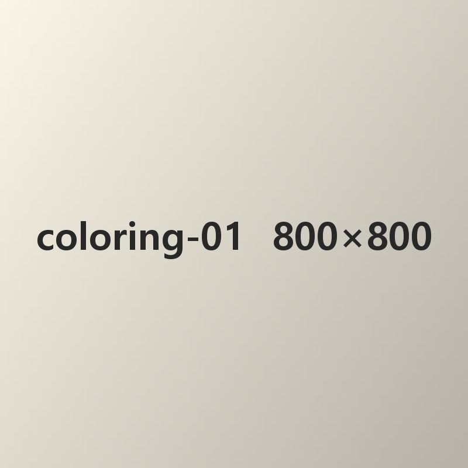
대나무를 즐겨 먹고 몸빛이 흑백으로 나뉜 곰 닮은 동물
0051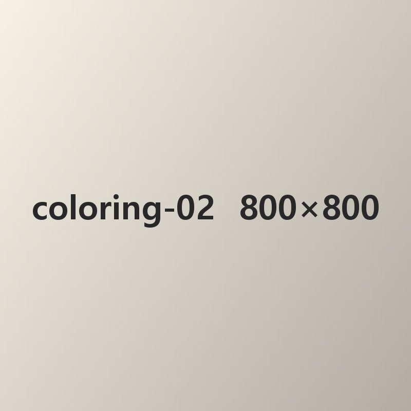
마음결이 섬세하고 재치가 넘쳐요.
0030땅 위에 사는 동물 가운데 가장 큰 동물
0012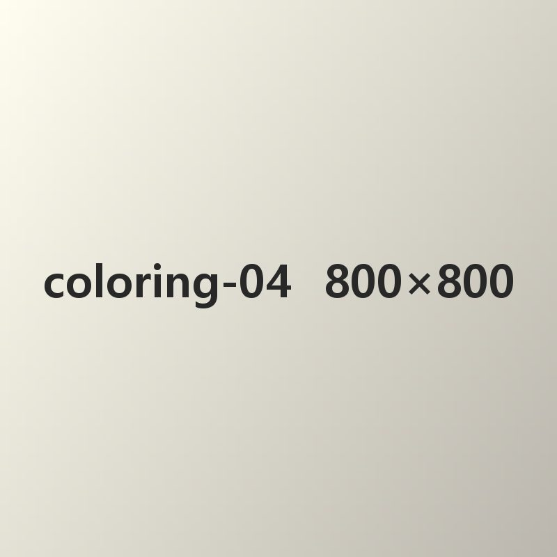
축하와 기쁨, 함께 나누는 즐거움을 담은 상징
0020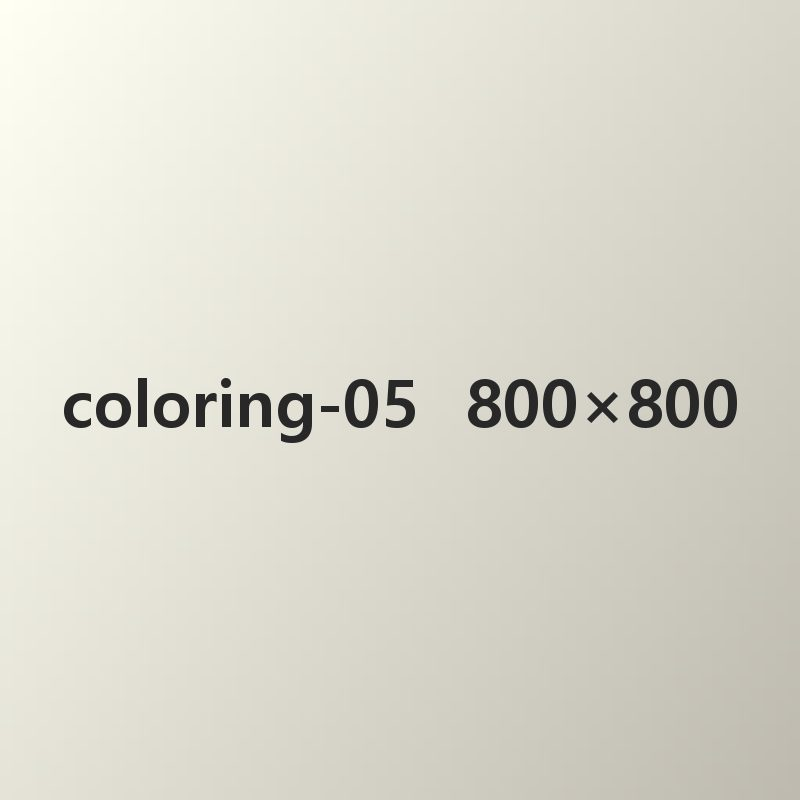
차를 마실 때 쓰는 잔. 차 도구의 하나로 다기(茶器)라고도 해요.
1024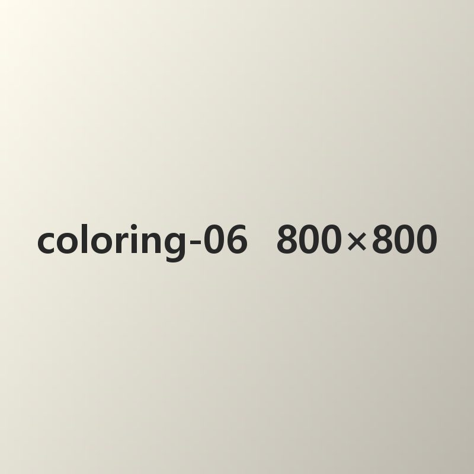
영리함과 끈질긴 생명력을 뜻하며, 날쌔고 상황에 재빨리 대처하는 실속 있는 성격의 사람을
0011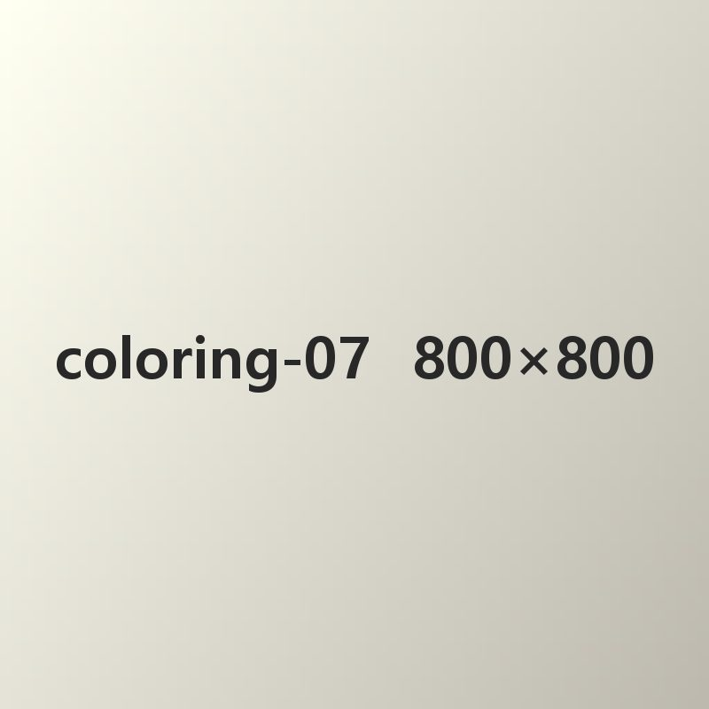
재치와 꾀를 뜻하며, 똑똑하고 호기심이 많으며 두루 잘 맞추는 성격의 사람을 나타냅니다
0010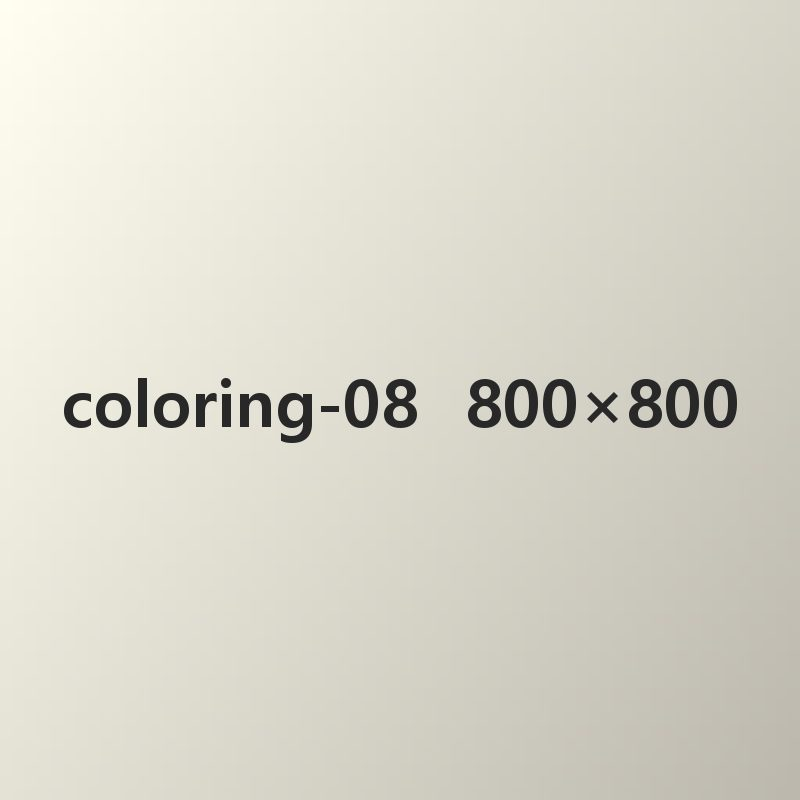
순하고 따뜻한 마음을 뜻하며, 배려가 깊고 다툼 없는 평화를 아끼는 성격의 사람을 나타냅니다.
006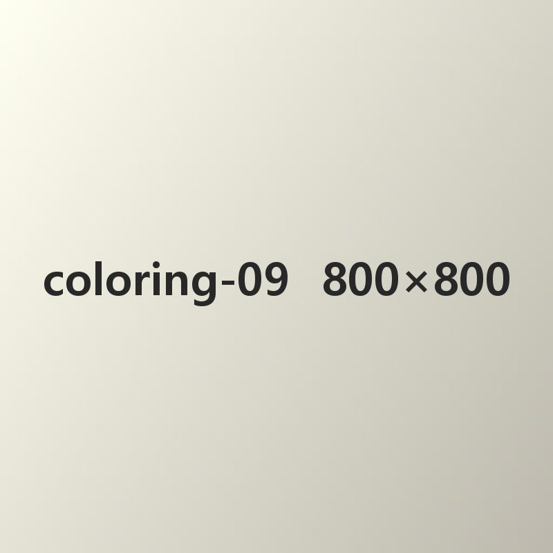
앵무새는 알록달록한 깃털과 말을 곧잘 흉내 내는 재주를 지닌 새로, 똑똑함과 소통, 활기를 뜻합니다.
009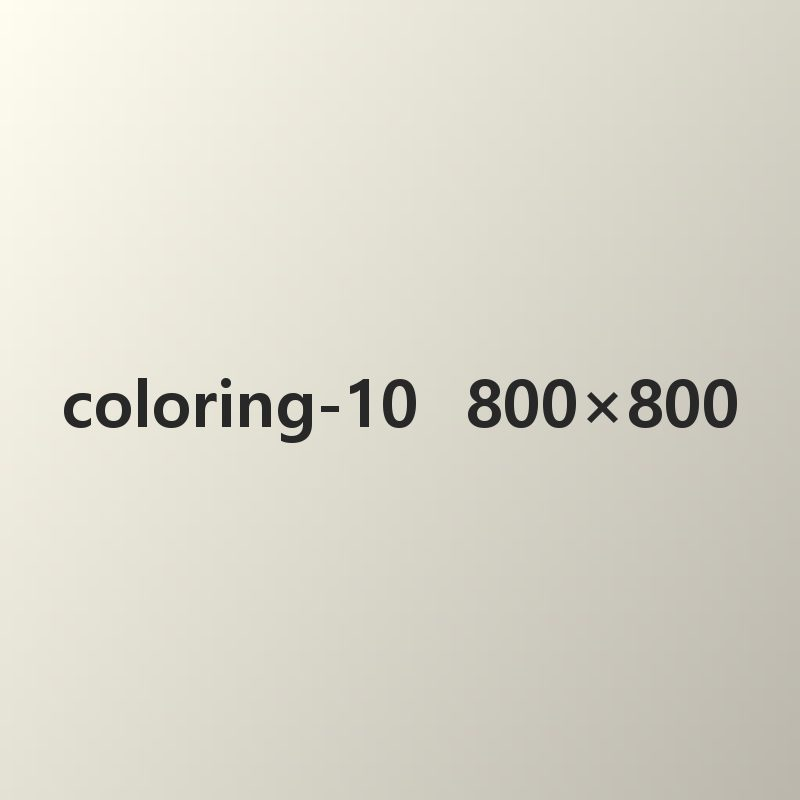
부지런함과 끈기를 뜻하며, 성실하고 믿음직한 성격의 사람을 나타냅니다.
0012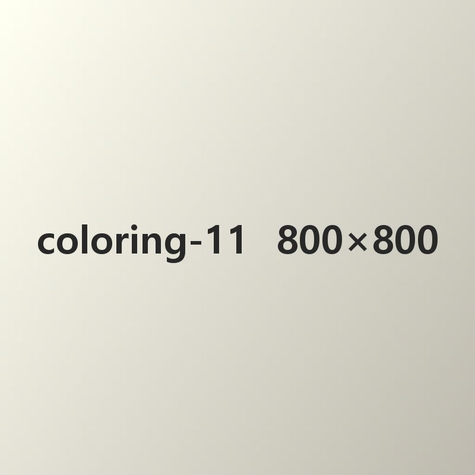
왕이나 임금이 머물던 웅장하고 아름다운 건물로, 위엄과 역사, 문화의 멋이 고스란히 담겨 있어요
0010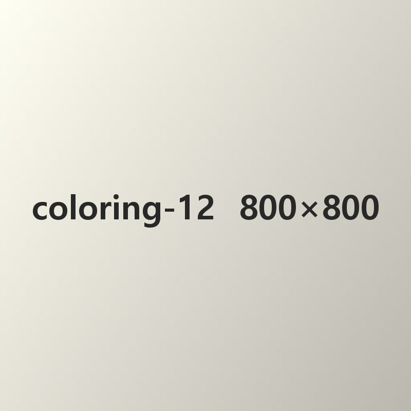